Grafana Stat Panel 同時顯示最新的值與 Sparkline
需求
在 Grafana 的 Stat Panel 同時顯示最新的值與 Sparkline（迷你圖表）。
問題分析
Stat Panel 支援 Instant Query 與 Range Query：
- Instant Query：Query Type
Instant，只查詢最新的值，該值會顯示在 Panel 上 - Range Query：Query Type
Range，查詢一段時間內的值，最後一個值會顯示在 Panel 上，所有質會以 Sparkline 的方式顯示在 Panel 上
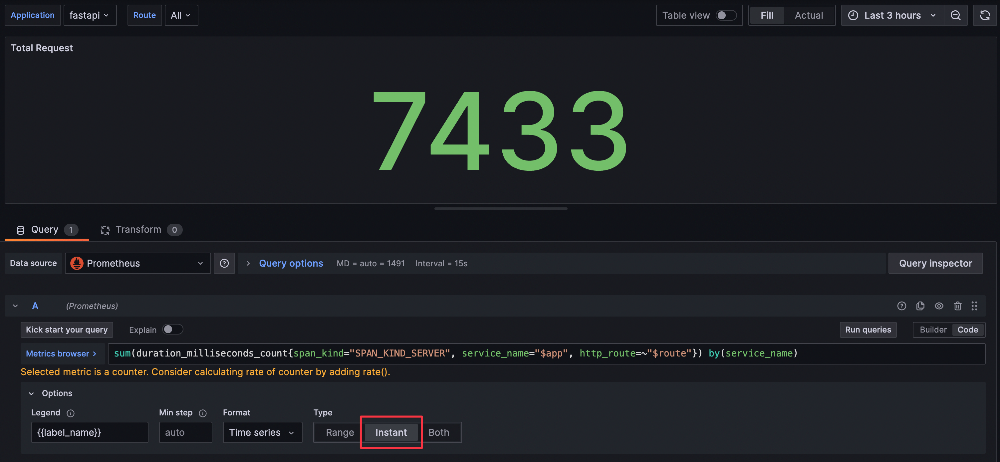
Instant Query 畫面
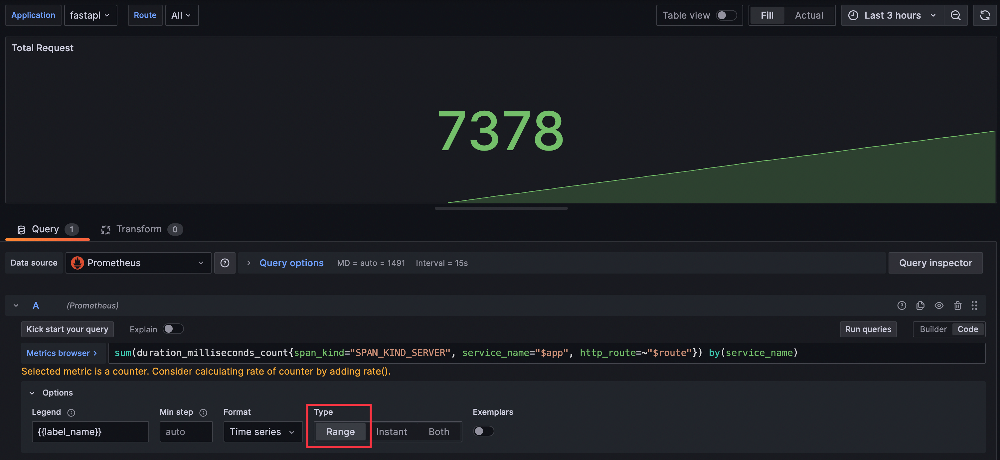
Range Query 畫面
但單純使用 Range Query 時會發現，有時候改變時間區間時，顯示在 Panel 上想像中代表最新的值會變大或變小，導致使用者會對於數值的正確性產生疑慮。
這是因為在 Grafana 使用 Range Query 時，實際的查詢時間區間會為了配合查詢 Prometheus 時要使用的 Step 參數而被調整，查詢使用的開始與結束時間都會變得比 Grafana 畫面設定的時間區間還要早。若調整後的結束時間與畫面設定的結束時間中間剛好有資料點時，就會發生 Range Query 的結果不是該 Series 最新的值，而是調整後的結束時間點往前找到的值，如下圖所示：
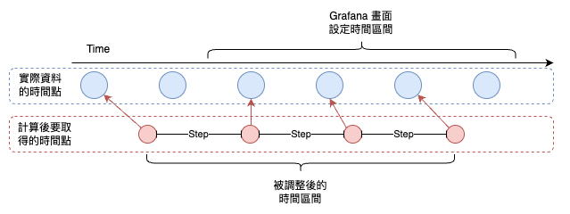
藍色的最後一個資料點，因為查詢時間位移的關係而不會被該次查詢查到
更詳細的 Step 參數與 Grafana 設定方式將於另一篇文章中說明。
雖然可以使用 Both Type 進行查詢，同時顯示 Instant Query 與 Range Query 的結果，但 Panel 會顯示兩個值，容易造成使用者混淆。
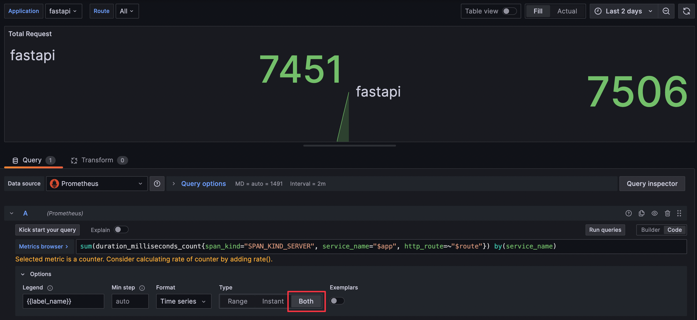
Both Query 畫面
圖中也可以看到，右側 Instant Query 的值與左側 Range Query 的值不同，這在查詢區間範圍較大時會更明顯。
解法
使用 Both Type，並將兩個 Series 合併，讓 Instant Query 的值最為最後一個值，同時有 Range Query 的資料供繪製 Sparkline。
-
使用
BothType 查詢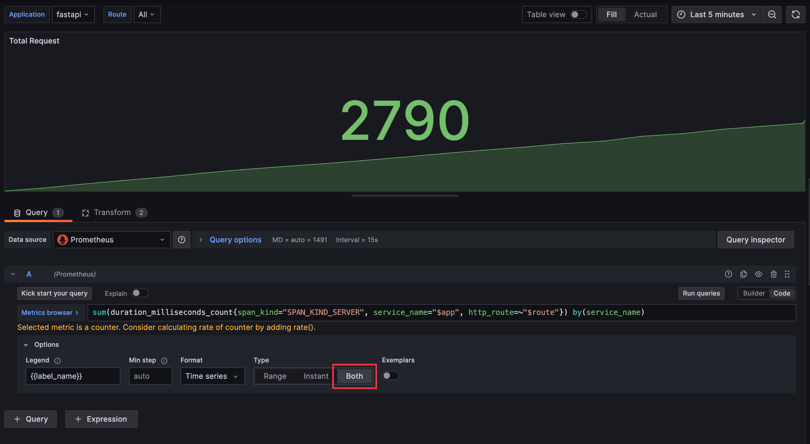
Query Type 設定 -
使用
Series to rows與Sort by兩個 Transform- Series to rows：將 Instant Query 與 Range Query 的資料合併
- Sort by：將合併後的資料依照
Time欄位排序，確保最後一筆資料為最新的資料
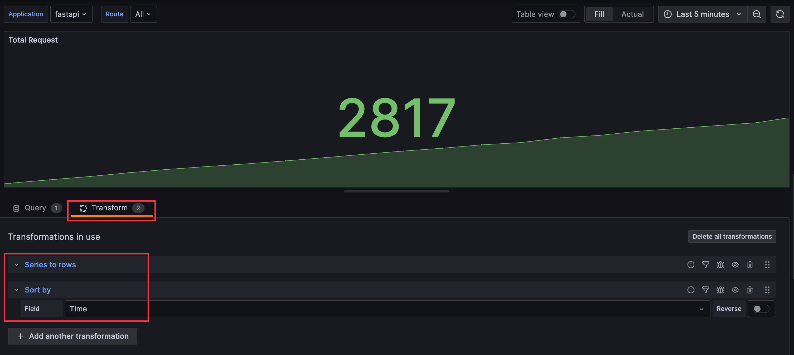
Transform 設定
說明
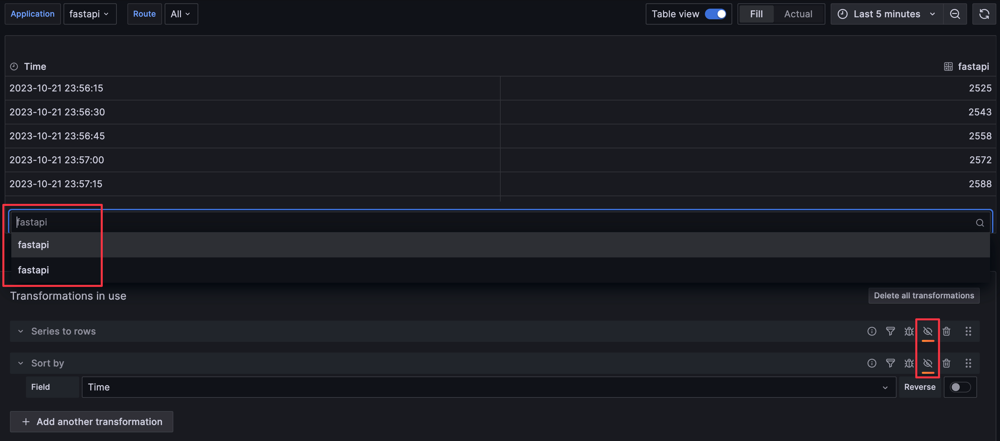
先關閉 Transform，並切換為 Table 檢視，可以看到兩個 Series，第一個是 Range Query 的資料。
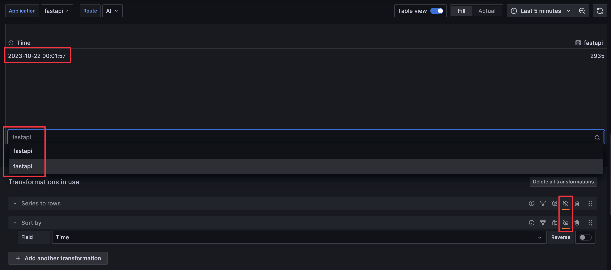
第二個是 Instant Query 的資料。
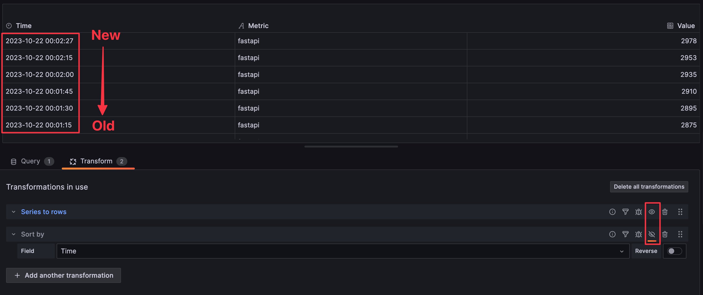
啟用 Series to rows transform，兩個 Series 會合併成一個 Series，但預設的排序是依照時間欄位降冪排序，導致最後一筆資料不是最新的資料，而 Stat Panel 預設會顯示最後一筆資料。
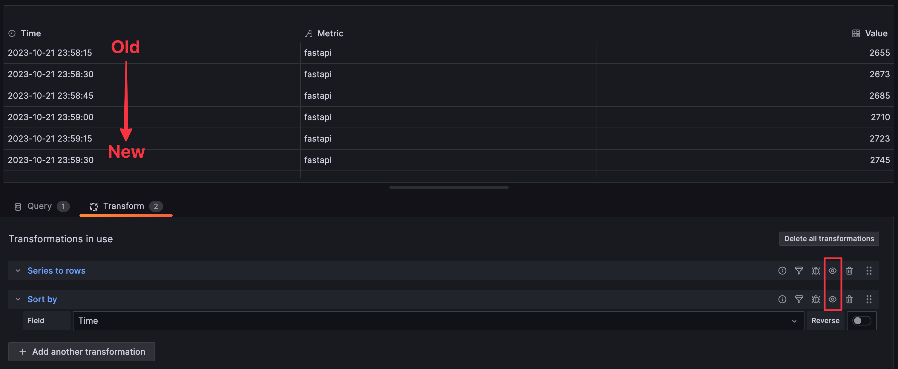
啟用 Sort by transform，並以 Time 欄位排序，確保最後一筆資料為最新的資料。
多筆資料應用
如果想要在同一個 Stat Panel 上顯示多筆資料但達到一樣的效果，則要使用多額外使用 Partition by values transform 以 Metrics 欄位分割資料。
-
使用
BothType 查詢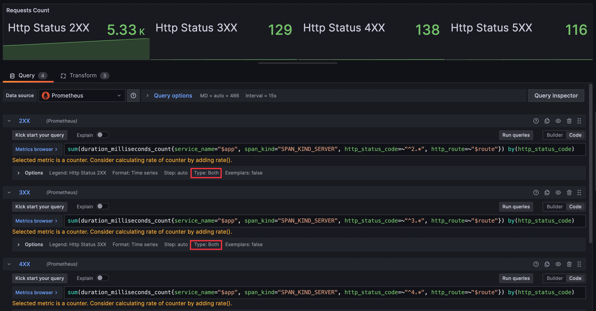
Query Type 設定 -
使用
Series to rows、Sort by、Partition by values三個 Transform- Series to rows：將 Instant Query 與 Range Query 的資料合併
- Sort by：將合併後的資料依照
Time欄位排序，確保最後一筆資料為最新的資料 - Partition by values：將全部被合併的資料再以
Metrics欄位分割成多筆 Series
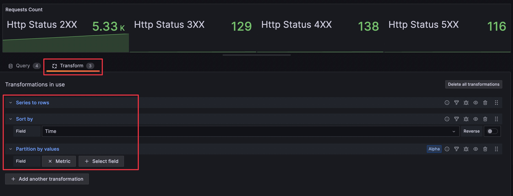
Transform 設定
參考資料：